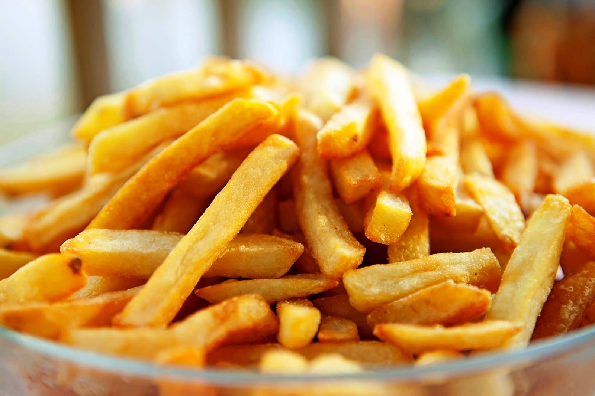

7 cucharadas (55 gramos) de harina para todo uso, cantidad dividida
7 cucharadas (55 gramos) de maicena
1 cucharadita de polvo de hornear
Sal marina, al gusto
1 pizca de pimienta negra recién molida, al gusto
1/3 taza de cerveza oscura, fría
1/3 taza de agua con gas, fría
4 filetes de pescado (7 onzas) (pescado blanco grueso)
Para las papas
2 libras de papas, peladas
1 cuarto de galón (1 litro) de aceite vegetal, o manteca de cerdo, para freír

Pasos
Ponga a un lado 2 cucharadas de harina. En un tazón grande y espacioso, mezcle la harina restante con la maicena y el polvo de hornear. Sazone ligeramente con una pequeña pizca de sal y pimienta.
Usando un tenedor para batir continuamente, agregue la cerveza y el agua con gas a la mezcla de harina y continúe mezclando hasta obtener una mezcla espesa y suave. Meta la mezcla en la nevera para que repose entre 30 minutos y 1 hora.
Mientras tanto, corte las papas en rodajas de un poco menos de 1/2 pulgada de grosor, luego córtelas en chips de 1/2 pulgada de ancho. Coloque los chips en un colador y enjuague con agua corriente fría.
Coloque las patatas fritas lavadas en una cacerola con agua fría. Lleve a ebullición suave y cocine a fuego lento durante 3 a 4 minutos.
Escurrir con cuidado a través de un colador, luego secar con toallas de papel. Reservar en la nevera tapado con toallas de papel hasta que se necesite.
Mientras tanto, coloque los filetes de pescado sobre una toalla de papel y séquelos. Sazone ligeramente con un poco de sal marina.
Caliente el aceite a 350 F en una freidora o en una cacerola grande y profunda. Cocine las papas fritas unos puñados a la vez en la grasa durante aproximadamente 2 minutos. No los dore. Una vez que las patatas fritas estén ligeramente cocidas, sácalas de la grasa y escúrrelas. Manténga a un lado.
Coloque las 2 cucharadas de harina reservadas de la mezcla para rebozar en un recipiente poco profundo. Mezcle cada filete de pescado en la harina y sacuda cualquier exceso.
Sumergir en la mezcla, cubriendo todo el filete.
Verifique que la temperatura del aceite aún sea de 350 F. Baje con cuidado cada filete en el aceite caliente. Freír durante aproximadamente 8 minutos, o hasta que la mezcla esté crujiente y dorada, volteando los filetes de vez en cuando con una espumadera grande.
Una vez cocidos, retire los filetes del aceite caliente y escúrralos sobre toallas de papel. Espolvorear con sal. Cubra con papel vegetal (papel pergamino) y mantenga caliente.
Caliente el aceite a 400 F, luego cocine las papas fritas hasta que estén doradas y crujientes, o aproximadamente 5 minutos. Retirar del aceite y escurrir. Sazonar con sal.
Sirve inmediatamente con el pescado caliente acompañado de tu condimento favorito.